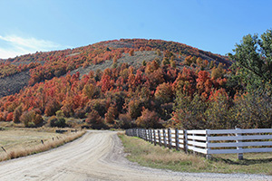
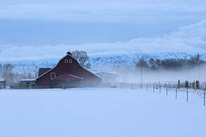

Welcome to Bear Lake Valley
Home of the beautiful blue water of Bear Lake
Bear Lake Valley is home to beautiful landscapes of mountains and valleys. The weather can be as varied as the land. You have to understand the difference between weather and climate, however. Weather is what's going on now and for a few days. Climate describes conditions over long periods of time. The Bear Lake Valley receives an average of 67 inches of snow per year and 15 inches of rain. The average for sunny days in Bear Lake Valley is 212 days. We have some beautiful weather to enjoy all your outdoor and fishing activities.

